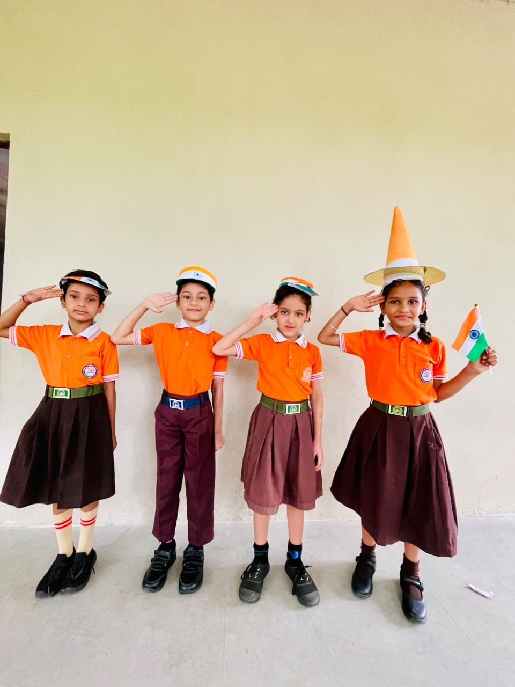

Sports
Physical activity supports health, teamwork, focus and the discipline of practising towards improvement.

School life offers students many ways to practise cooperation, creativity, resilience and leadership. Through structured activities and shared experiences, students learn to contribute, listen, take initiative and celebrate progress.
The activities shown here are broad programme areas. Specific clubs, schedules and events should be updated by the school as they are confirmed.
Physical activity supports health, teamwork, focus and the discipline of practising towards improvement.
Expression through performance, art, music and celebration builds confidence and appreciation.
Healthy challenge helps students prepare, participate graciously and learn from experience.
Visits, demonstrations and themed learning experiences make ideas more vivid and connected.
Students explore digital tools, coding, making and responsible technology use.
Shared responsibility and group work create opportunities to practise initiative, communication and trust.